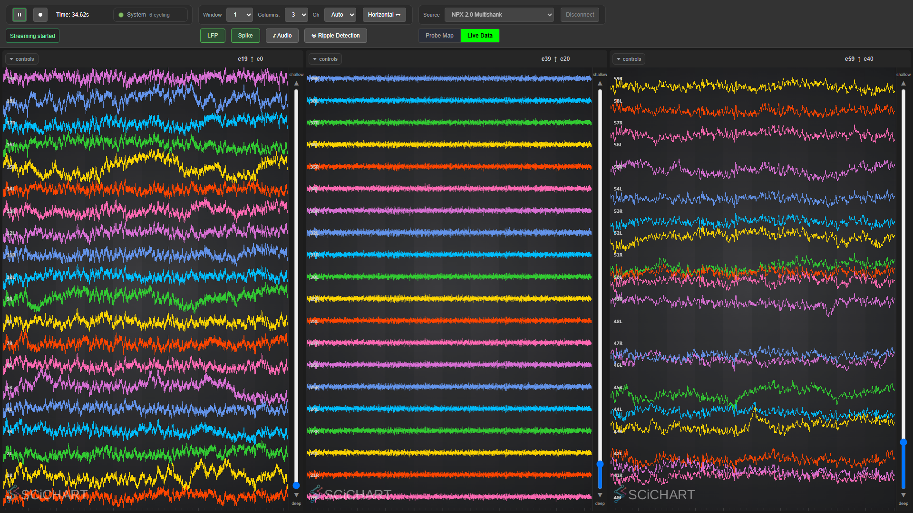
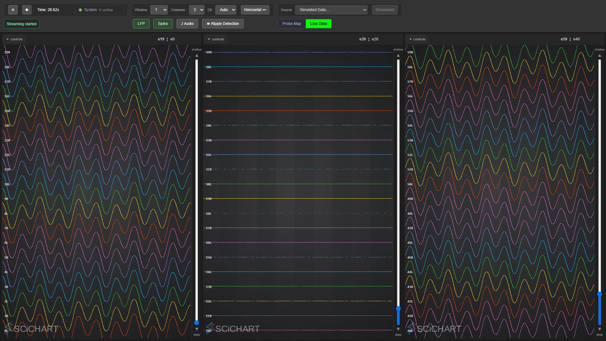
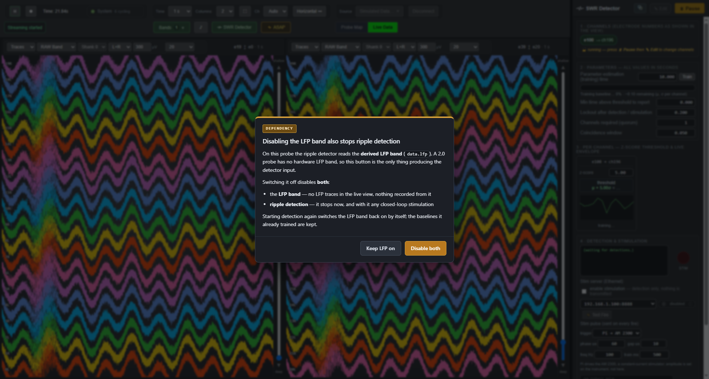

Derived bands — LFP and spike, from one raw stream#
A Neuropixels 2.0 probe has no hardware ap/lfp split. It delivers one 30 kHz stream,
data.npx.raw, and every band you want to look at is computed from it. Two are:
| band | filter | output |
|---|---|---|
| LFP | 2nd-order Bessel low-pass, 400 Hz | data.lfp |
| Spike / AP | 2nd-order Bessel band-pass, 300–6000 Hz | data.spike |
Both run on all 384 channels, both are switchable from the GUI, and both can be displayed — side by side, one per row or column.
This is a 2.0 feature. A 1.0 probe delivers
data.npx.apanddata.npx.lfpfrom the headstage, so it does not need either derived band and nothing here is wired for it. See §8.

Real NP2.0 on PXIe. Left: raw, broadband with slow drift. Middle: spike band — the drift is gone, the high-frequency content remains. Right: LFP band — the hash is gone, the slow wander remains.
1. One processor, two bands#
SpikeBandProcessor is not a copy of LFPProcessor. Both are three-line subclasses of
BandFilterProcessor (src/core/BandFilterProcessor.{hpp,cpp}), which owns the entire loop:
consuming the raw stream, filtering, timestamping, committing, the liveness counter, and the
enable/disable switch. A subclass supplies exactly three things — the band's name, the data object
it writes, and which coefficients to load:
class SpikeBandProcessor : public BandFilterProcessor
{
public:
explicit SpikeBandProcessor(QObject* parent = nullptr)
: BandFilterProcessor("spike", "data.spike", parent) {}
protected:
void applyCoefficients(Avx2Filter& f) const override { f.setDefaultSpikeBandFilterCoefs(); }
};
This is deliberate. "The spike processor is identical to the LFP processor except for the filter" is a claim that stays true after the next change to either only if there is one copy of the code. The LFP loop was lifted verbatim into the base — it is the same code that has been running, not a rewrite.
2. The filtering is AVX2, 8 channels at a time#
Avx2Filter holds 8 lanes of a direct-form-I IIR, so 384 channels is 48 filter objects, and one
sample means 48 FMA chains rather than 384 scalar ones. Nothing about that changed for the spike
band: addSample() loops mNumBCoefs / mNumACoefs, so it is order-generic and the 5-tap
band-pass drops straight in where the 3-tap low-pass was.
"AVX2" is the fast path, not the only path. Since runtime SIMD dispatch landed,
Avx2Filterhas a scalar twin producing bit-identical output, chosen once at load from what the CPU and OS actually support.SPIKESPEAK_SIMD=scalarforces it — for an A/B, or to bisect a numerical difference — andSPIKESPEAK_SIMD=avx2demands the vector path (falling back with a warning if the CPU cannot). SeeSimdDispatch.md. Every CPU figure on this page is an AVX2-path measurement. On the scalar path the filter itself costs 3.10× more — and yet the whole backend measures 101.9 % of a core scalar against 102.2 % AVX2, i.e. no difference at all (Profiling.md§4). Both readings are correct: the filter is a small fraction of a backend dominated by acquisition and delivery. Quote whichever one answers the question you are actually asking, and say which.
The four setDefault*Coefs() methods were near-identical 40-line blocks. They now share one
loadCoefs() body, which is also where the "REPLACE, do not append" discipline lives — a real bug
once, and one that a fourth hand-copied setter would have been free to reintroduce.
Coefficients#
SpikeBandFilterCoefficients30kHz in src/core/Common.hpp, from
scipy.signal.bessel(2, [300, 6000], btype="bandpass", norm="mag", fs=30000).
Bessel for near-linear phase, so a spike keeps its shape instead of ringing. norm="mag" puts the
−3 dB points exactly on the band edges; the default norm="phase" drifts them to 374 / 5052 Hz.
| 50 Hz | 100 Hz | 300 Hz | 1 kHz | 3 kHz | 6 kHz | 10 kHz | 14 kHz |
|---|---|---|---|---|---|---|---|
| −28.1 | −16.3 | −3.0 | −0.1 | −0.4 | −3.0 | −12.8 | −41.3 |
Unity peak gain, all poles inside the unit circle.
The band is doing what it says. On the simulated source — a pure low-frequency sine — the spike column is almost flat while raw and LFP both show the sine, because a 300–6000 Hz band-pass rejects it. That makes a poor demo and a good test:

3. What each band costs, measured#
Simulated NP2.0, 384 channels at 30 kHz, backend CPU as a percentage of one core:
| state | CPU |
|---|---|
| both bands ON | 7.6 % |
| spike OFF (LFP only) | 2.1 % |
| both bands OFF | 0.7 % |
| both back ON | 7.0 % (repeatable) |
So the spike band costs ~5.5 %-core and the LFP band ~1.4 %-core, and turning both off recovers ~6.9 % of a 7.6 % backend. That is the entire reason the switches exist.
Read those numbers as the end-to-end cost of a band — filtering plus the display processor's
min/max reduction plus the WebSocket frames — not as filtering alone. The spike band costs more
than the LFP band partly because it has five taps rather than three, and partly because
Avx2Filter::addSample() shifts its state with std::copy_backward on every sample, which is
O(taps × 8). Replacing that shift with a circular index would remove the difference; it is not done
here because the same filter is on the ripple-detection path and the current cost is not a
bottleneck.
4. How much delay each band adds#
Two separate things, and they are worth keeping apart.
Filter group delay -- the signal's own delay#
What the filter itself imposes, computed from the coefficients (scipy.signal.group_delay):
| band | in-band mean | worst in band | at 1 kHz | at 3 kHz |
|---|---|---|---|---|
| LFP (low-pass 400 Hz) | 0.625 ms (18.7 samples) | 0.689 ms at DC | 0.108 ms | 0.013 ms |
| Spike (band-pass 300--6000 Hz) | 0.073 ms (2.2 samples) | 0.637 ms at the 300 Hz edge | 0.101 ms | 0.044 ms |
The LFP figure is nearly flat across its passband, which is the whole reason for choosing Bessel. The spike band is the number that matters for unit activity: at real spike frequencies it is 1 to 3 samples, so a waveform arrives essentially where it happened.
Pipeline delay -- how far behind the probe the processor runs#
Measured live, instrumented in BandFilterProcessor and reported as a bandLatency event about
once per second. The figure is the backlog at wake-up: samples already committed by the source
and not yet filtered.
Real NP2.0 on PXIe, 384 channels at 30 kHz, 40 one-second windows:
| band | backlog mean | backlog worst | filter cost |
|---|---|---|---|
| LFP | 1.001 ms (30.0 samples) | 2.667 ms | 0.99 us/sample, all 384 ch |
| Spike | 1.001 ms (30.0 samples) | 2.667 ms | 1.33 us/sample, all 384 ch |
Both bands show exactly the same backlog, and that is the finding. 30 samples is 1 ms, which is the granularity the SOURCE commits at -- so the pipeline delay is set by how the probe delivers, not by the filtering. Enabling a band does not make it lag more than the other, and the spike band's extra taps cost CPU, not latency.
ASAP mode#
That reading predicts something testable: if the backlog is the source's delivery granularity, then
changing the granularity should move it and nothing else. low_latency: true on the source (ASAP
mode -- see LatencyProfiling.md) commits every block as it arrives instead of
batching, and it does exactly that.
Simulated NP2.0, 384 ch at 30 kHz, same profile with and without the flag, 35 one-second windows each after a 5 s warm-up:
| mode | band | backlog mean | backlog worst | commit batch |
|---|---|---|---|---|
| normal | LFP | 1.002 ms | 2.300 ms | 30.1 samples |
| normal | Spike | 1.002 ms | 2.300 ms | 30.1 samples |
| ASAP | LFP | 0.038 ms | 0.567 ms | 1.1 samples |
| ASAP | Spike | 0.037 ms | 0.567 ms | 1.1 samples |
ASAP takes ~1.00 ms off both bands -- a 26x reduction -- and the two bands stay identical to each
other. The batch column is the mechanism in plain sight: 30.1 samples per commit becomes 1.1, and
the backlog follows it down. Nothing in the filtering changed, which is the point; filter_us_per_sample
is the same 1.3--1.7 us in both modes.
So the band totals under ASAP are ~0.66 ms for LFP and ~0.11 ms for spike, and what remains is almost entirely the filter's own group delay -- the floor you cannot buy your way past.
To reproduce: add low_latency: true to the source block of any 2.0 profile, enable both bands, and
read the bandLatency events. The figures above came from SimNpx2.yaml with and without that one
line, nothing else changed.
Since #80 you no longer have to edit a YAML file to get there. ASAP is a per-module runtime
control -- {"command":"lowLatency","module":"...","value":true}, and the Low Latency
control in the GUI (webinterface/LowLatencyModule.js) -- and asking for it on one module
propagates the request upstream to whatever feeds it. That is why BandFilterProcessor
reports its edges (inputDataNames() / outputDataNames()) even though it deliberately does
not implement ILowLatencyCapable: it has no knob to turn and needs none -- it already wakes
on the first sample and takes whatever is there -- but on an NP2.0 closed loop it is the hop
between the ripple detector and data.npx.raw, and a walk that could not see past it would never
reach the source, which is where the only real knob is. The table above is the measurement of why
that hop matters: nothing in the filtering changed, and the backlog still fell by 26x.
It stays opt-in for the reason the numbers here imply and LatencyProfiling.md
measures: ASAP costs about 98 % of one core against 13.4 %. A control does not make it cheap.
End to end#
| stage | LFP | Spike |
|---|---|---|
| filter group delay | 0.625 ms | 0.073 ms |
| pipeline backlog | 1.001 ms | 1.001 ms |
| band total | ~1.6 ms | ~1.1 ms |
On top of that the live view adds its own bucketing before anything is drawn -- the display
processor emits on a timebin (20 ms by default, update_interval_ms), which dominates both. If what
you are judging is "does the trace on screen lag", that display interval is the number to look at,
not these.
filter_us_per_sample also puts the CPU measurement below on a per-sample footing: 0.99 us x 30 kHz
is ~3.0 %-core for LFP and 1.33 us x 30 kHz is ~4.0 %-core for spike, which is consistent with the
end-to-end figures measured a different way.
5. Enable / disable#
One toolbar button — "Bands" — with a dropdown, to the left of the audio and ripple buttons.

The screenshots above predate the consolidation and show the two separate buttons this replaced.
The button carries a count of how many bands are running — not how many exist — so the toolbar answers "is anything filtering?" without being opened, and turns green when the count is non-zero. Each band is a row in the menu with its own on/off state and filter description.
It was two buttons until 2026-08-24. Every module that puts a permanent control in the toolbar is
competing for the same width, and the toolbar has a hard 1080 px floor it must fold into
(tests/gui/toolbar_layout.py). One button also scales: a third derived band becomes another menu
row rather than another permanent fixture on the bar.
The menu is position: fixed and anchored to the button, so it survives the toolbar folding into two
rows; it clamps to the viewport near the right edge, and closes on click-away, Escape, resize and
scroll.
A disabled band still advances its read index but skips the filtering, the timestamp write and the commit. Skipping the advance instead would leave a backlog to be chewed through the instant it came back on — a burst of stale samples arriving at once.
Re-enabling resets the filter state. The samples either side of a disabled gap are not continuous, and running an IIR across that discontinuity rings for tens of milliseconds and looks exactly like signal.
And the write slot is the COMMIT count, not the read cursor. The processor holds two positions:
where it has read to in data.npx.raw, and where it writes in its own output ring. A disabled band
advances the first and not the second, so they are not the same number — while every consumer
indexes the ring by its own committed-sample count (constDataAt is ind % capacity).
These two roles shared one counter until 2026-08-24. That was correct only for a band running from
the first sample, which every profile used to do — so the defect was unreachable in practice and
invisible in review. Making bands start off turned it into the default path: the producer would
resume writing at skipped % capacity while consumers still read from committed % capacity, and
the band would then serve correct-looking samples of the wrong age — up to a second of extra delay at
30 kHz, different every session, silently. tests/test_bandfilterprocessor.cpp pins it, and the
reasoning is in AgentTraps.md §3.
Available on every 2.0 profile. Running on none of them.#
A 2.0 probe has no hardware ap/lfp split: one 30 kHz raw stream, and both bands exist only
because SpikesPeak derives them. So on a 2.0 source these are not an optional extra a profile opts
into -- they are the only way to see either band at all. ProcessorManager::setupProcessors
therefore auto-provisions proc.lfp and proc.spike for any source that has data.npx.raw and
no data.npx.lfp, whether or not the profile lists them, and binds them to the display so the
per-column dropdown can offer them.
Declaring a band is not the same as running it. A band starts off — including one the profile declares. It runs when one of three things happens:
| a band runs because... | mechanism |
|---|---|
| the operator pressed its button | setEnabled on command id 0x219 |
| something that needs it turned it on | RippleDetector::ensureInputBandEnabled() — see below |
| the profile explicitly asked for it | enabled: true on the processor entry |
This was not the old behavior and the change is deliberate. mEnabled used to default true, so
merely listing proc.lfp in a profile meant every 2.0 session filtered all 384 channels through a
band nobody had asked to see, and the GUI button was green before the operator touched anything.
The rule now is the one an operator would state: minimal things running.
Nothing shipped records a derived band, and that is by design rather than by accident — a derived
band is the raw band with a documented filter on it, so it can be reproduced exactly offline
(coefficients in §2, and
ripple_tools/validate_filters.py checks the reproduction to float32 rounding). Recording it would
double the disk cost for something the raw file already contains. If a profile ever does need one on
disk, it must also say enabled: true — a recorder pointed at a band that is off writes silence —
and it must be tested first: proc.npx.recorder expects int16 and these bands are float, nothing
refuses the config, and nobody has checked what comes out. See §9.
Before this work, a profile written before the bands existed left the operator with no LFP button at
all, and a profile that declared proc.lfp but never listed data.lfp under the display inputs:
gave them a green button and no way to look at the band.
A 1.0 probe is deliberately excluded: it streams real hardware ap and lfp, so deriving a second
copy is a different feature with a different justification (see §8).
Buttons follow the CURRENT graph, not the process. The registry hands out one instance per
processor name for the life of the process, so "the object exists" says nothing about the profile in
front of you -- a 1.0 profile selected after a 2.0 one gets the same proc.lfp object back,
configured for a source that is gone. BandFilterProcessor::isProvisioned() is what the WebSocket
layer keys off, cleared by ProcessorManager on teardown; and the browser drops its band state on
every source change and waits to be told again. Announcing state off object existence is what left a
green LFP button on a profile with no derived bands at all.
The ripple detector depends on the LFP band, and the backend enforces it#
On a 2.0 probe the ripple detector reads data.lfp -- the band proc.lfp derives -- because
there is no native LFP band to read. That dependency is handled in both directions, in the
backend, so the GUI never has to guess:
Starting detection enables the band. RippleDetector::ensureInputBandEnabled() runs on a GUI
start, on the legacy enable, and on auto_start, and switches proc.lfp on if it is off. The
band then announces its own state and the button turns green -- because the backend did it, not
because the browser assumed it. A headless or CLI-driven run gets the same guarantee, which is why
this lives in the detector and not in the GUI.
The detector reports which band it is bound to in rippleState:
{"event":"rippleState","input":"data.lfp", ...}
On a 1.0 probe that field reads data.npx.lfp and none of this applies -- the derived band is not in
the path, and no switch here touches the probe's own LFP.
Disabling the band while detection runs raises a dialog.

Not a status line: the consequence is invisible from the button that causes it. The detector does not fail, it just stops being fed and reports nothing, which reads as "the ripples stopped happening". Confirming stops detection first and then disables the band, so the state afterwards is the one the dialog described. Cancelling changes nothing.
The dialog only appears while detection is actually running. With it idle there is nothing to warn about any more -- starting it switches the band back on by itself, so the old silent-failure path (band off, press Start, detector reads nothing forever) can no longer happen.
tests/gui/band_dependency.py covers all of it, including the 1.0 case.
Control surface#
Commands go out on binary id 0x219 (kBandCommandId), JSON payload. Both processors subscribe
to the same id and ignore traffic addressed to the other band:
{"band": "spike", "action": "setEnabled", "value": false}
{"action": "getState"}
State comes back as bandState, relayed by WebSocketServer::slBroadcastBandEvent:
{"event":"bandState","band":"spike","enabled":false,"present":true,"stream":"data.spike"}
The buttons render confirmed state, never their own request (issue #18).
6. Displaying a derived band#
Until now the derived LFP band existed only as detector input — no config had ever bound it to the
display, and it could not have been: DisplayProcessor cast every stream to
CircularBuffer<int16, PacketInfo>, and the derived bands are CircularBuffer<float, float>.
StreamState now holds either buffer with an isFloat flag, plus two small accessors
(totalAdded(), ticksAt()) so the bucketing logic is shared. Two details that matter:
- Timestamps. Hardware bands carry
PacketInfo::Timestampin 100 kHz ticks; derived bands carry afloatin seconds.ticksAt()converts, so every timebin comparison downstream stays in ticks and neither kind needs its own bucketing. - Scale. The name test for derived bands is an exact match on
data.lfp/data.spike, and it runs before the substring inference — becausedataName.find(".lfp")matchesdata.lfpjust as happily as the hardwaredata.npx.lfp, and would then apply the NP1 LFP-gain scale to a band that is not on that scale. A derived band takes the scale of what it was derived from; a config can override withscale_factor:.
calcMinMax() gained a float path — the same AVX2 min/max, minus the int16→float conversion, kept
as a separate loop so neither path pays for the other's branch.
Picking a band per row/column#
Each row or column chooses its own band from its own dropdown, so raw, spike and LFP can be watched
at once. The picker is built from knownStreams, which is populated by arriving frames — so a
band that is switched off leaves the list and comes back when re-enabled.
That needed one guard. A band processor reads its enable flag once per batch, so a few
already-consumed samples still commit after the switch and the display emits one last bucket. That
trailing frame re-added the band to the picker moments after it was removed, and whether you saw it
came down to timing. AppController.handleNewStream() now refuses to register a stream that
BandModule.isDisabled() reports as off.
DataStore.forgetStream() also drops the stream's buffers, not just its name: handleNewStream is
gated on !streams[id], so keeping them would make the band unable to come back — its next frame
would early-return out of initializeStream() and never re-register the id.
7. Which configs have it — and why the question barely matters any more#
Both bands are auto-provisioned for any source with data.npx.raw and no data.npx.lfp, whether or
not the profile lists them (§5). So the honest answer to "which configs have derived bands?" is
every 2.0 source, including the OneBox family that postdates this section, and including a profile
written before the bands existed.
What a declaration still buys is ordering and display binding. SimNpx2.yaml (no hardware needed)
and Npx2Pxi.yaml (real 2.0 on PXIe) are the only two that declare both bands; thirteen further
profiles declare proc.lfp alone, because it is the ripple detector's input on a 2.0 — the four
OneBox profiles, the PXIe + NI-DAQ profiles, the NI-DAQ and ripple sims, the simulated OneBox, and
the play-file source. A declared band is placed before the display, so its output buffer is sized
before the display binds it:
- name: "proc.lfp" # 2nd-order Bessel LOW-PASS 400 Hz -> data.lfp
- name: "proc.spike" # 2nd-order Bessel BAND-PASS 300-6000 Hz -> data.spike
- name: "proc.npx.display"
inputs:
- data: "raw"
name: "data.npx.raw"
- data: "lfp"
name: "data.lfp"
- data: "spike"
name: "data.spike"
An optional enabled: false on either processor starts that band switched off — which is what the
auto-provisioned nodes say too, so a declared band and an auto-provisioned one behave identically
unless the profile explicitly says enabled: true.
8. Scope: 2.0 only, and why 1.0 is a different question#
Both bands exist because a 2.0 probe has no hardware ap/lfp split: one 30 kHz stream, and
anything else you want has to be computed. A 1.0 probe has the opposite situation — the headstage
already delivers data.npx.ap (30 kHz) and data.npx.lfp (2.5 kHz) — so it needs none of this to
work, and none of the configs here touch it.
Whether a 1.0 probe should be able to use these filters anyway is a separate question, and a more nuanced one than pointing the processor at a different input. It is deliberately deferred rather than half-answered here.
BandFilterProcessor will technically accept an inputs: entry naming data.npx.ap. Read that
as a mechanism, not a decision. It is untested, no config uses it, and it is not the design — it
would collide with the bands the hardware already provides (two things called "the LFP band", on
different sample rates, with different scale factors), and the ripple detector already prefers the
native data.npx.lfp on a 1.0 probe. Treat 1.0 as unsupported until that discussion happens.
9. Known gaps#
⚠️ Recording a derived band is UNTESTED — and nothing stops you trying#
proc.npx.recorder expects the int16 interpreter. data.lfp and data.spike are float.
Nothing in the config layer refuses a recordings: entry naming one, and nobody has checked what
comes out — so the failure mode is unknown, and "unknown" on a recorder means a file that may look
plausible and be wrong. If you need a derived band on disk, treat that as a piece of work with a test
attached, not as a config line. And remember §5's rule: a recorder pointed at a band that is off
writes silence, so such a profile would also have to say enabled: true.
The design position is that you should not need to. A derived band is the raw band plus documented
coefficients, reproducible offline to float32 rounding (ripple_tools/validate_filters.py), so
recording it doubles the disk cost for something the raw file already contains.
Smaller#
- The filter state shift described in §3 is the one clear remaining optimization.
- The
tests/gui/coverage that this section used to say was missing now exists:tests/gui/band_dependency.py(§5) pins available-not-running, the dropdown round-trip, the backend-enforced detector dependency and its dialog, and the 1.0 case where no bands appear at all.